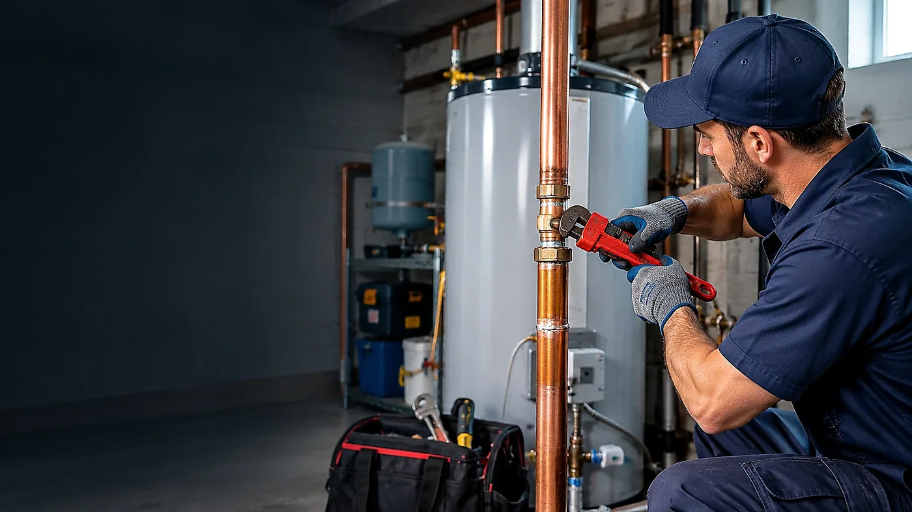

✦ Pipe Repair and Replacement Highlights for Buffalo Grove Homeowners
- Know your pipes: copper, PEX, galvanized steel, PVC and cast iron age differently.
- Warning signs: repeat leaks, rusty water, low pressure and visible corrosion.
- Repair or replace: spot repairs help isolated damage; repiping suits widespread wear.
- Plan the disruption: replacement may open walls or floors, so ask about access and restoration.
- Ask before work starts: confirm credentials, permits and a written estimate.
Pipe repair and replacement in Buffalo Grove, IL depends on the age and material of your plumbing. A single failed section can often be repaired. When leaks keep returning, a larger replacement may cost less over time than repeated repairs.
We are a referral website, not a plumbing contractor. We connect you with independent local plumbing professionals who can inspect your pipes and explain repair and replacement options. Confirm credentials, permits and prices directly with the provider.
How Pipe Repair and Replacement Works
| Stage | What happens | Where | Result |
|---|---|---|---|
| Inspect the system | The plumber checks pipe material, age and condition | Visible runs, access points | Clear picture of the problem |
| Plan the work | Options, access, permits and timing are agreed | Whole house or one line | Written scope and estimate |
| Replace or repair | Worn sections are removed and new pipe installed | Walls, floors, crawl spaces | New, leak-free piping |
| Test and restore | Pressure is tested and finishes are patched | All affected areas | Working system and repaired surfaces |
If replacement involves a water service line outside the house, Illinois utilities must be marked first. JULIE, the Illinois one-call center, handles locate requests through 811. Ask your provider who will make the request.
Older Plumbing in Buffalo Grove Homes
Many established neighborhoods around Buffalo Grove have plumbing that has been in service for decades. Ask your plumber which materials are in your home and how long they are expected to last. For pipe repair and replacement in Buffalo Grove, request a written scope that shows what will be opened and who restores walls and floors.
Need Pipe Repair or Replacement in Buffalo Grove?
Call now to be connected with an independent local plumbing professional.
Call Now(224) 524-0772Step-by-Step Pipe Repair and Replacement Process
- Inspect the pipesHave the plumber identify materials and the condition of visible runs.
- Compare optionsAsk about spot repair, replacing a section and full repiping.
- Confirm scope and permitsGet permits, access needs and restoration in writing.
- Schedule the workAgree on timing, water shutoff periods and clean-up before work starts.
Frequently Asked Questions: Pipe Repair and Replacement
When should old pipes be replaced?
Repeated leaks, rusty or discolored water, low pressure and visible corrosion are common reasons to consider replacement.
What is repiping?
Repiping means replacing a large part of a home’s supply plumbing with new pipe, often to solve widespread wear.
Do I need a permit for pipe replacement?
Permit rules vary by village. Ask the provider to explain which permits apply in your Buffalo Grove area.